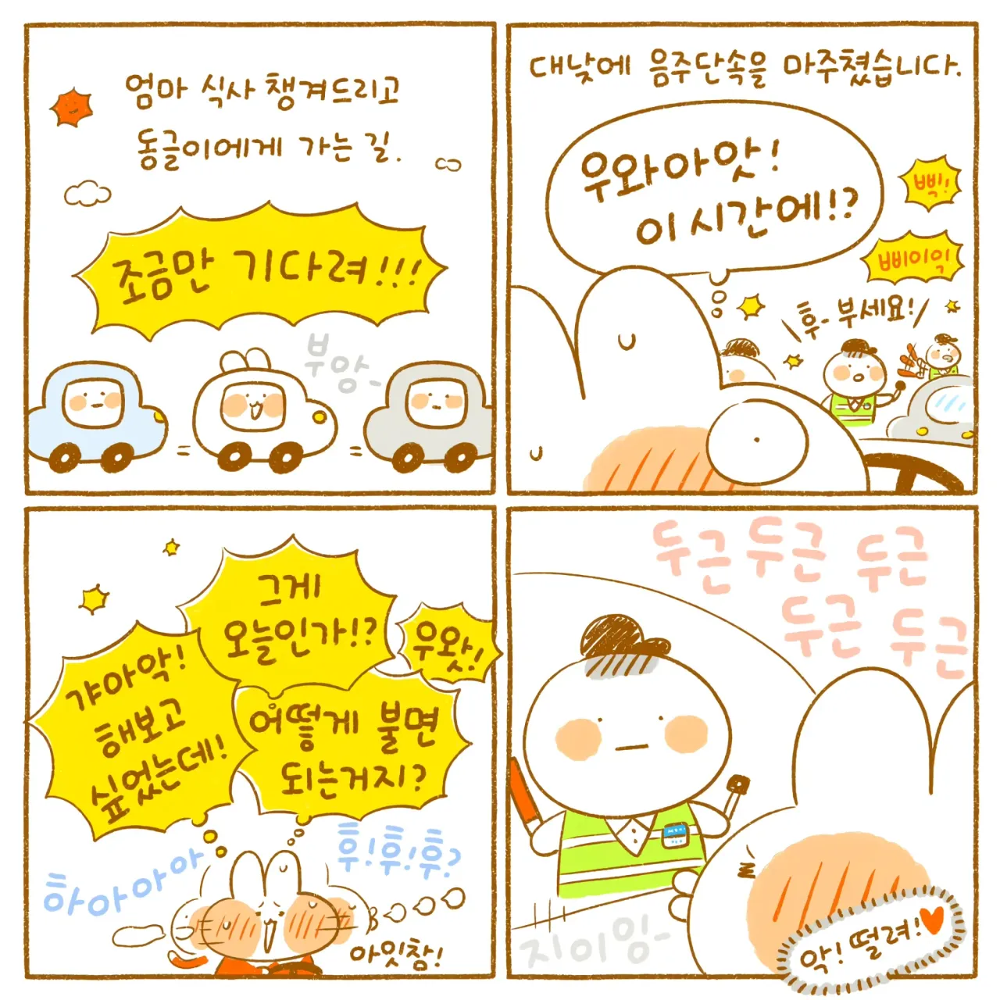
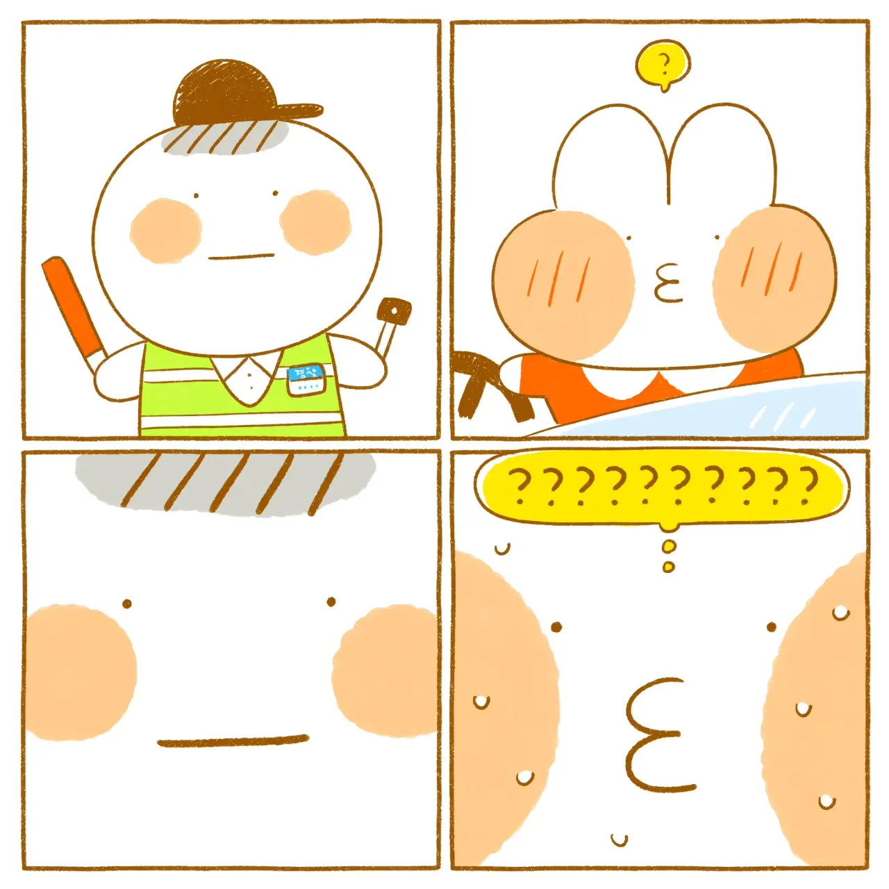
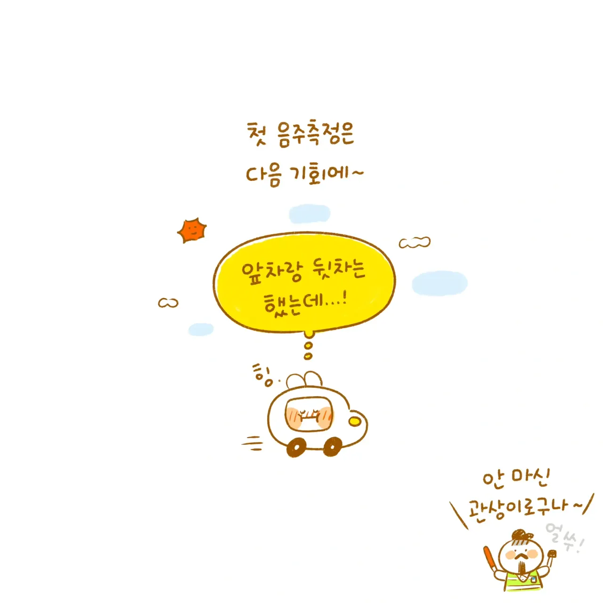

저번에 어떤 경찰이 댓글달았던거 같은데
기대하는 표정으로 다가오면 일부러 안하고 걍 보낸다고ㅋㅋㅋ
아 좀 시켜주라고!!!!!!
기대하면 안해줌 ㅋㅋㅋㅋ
미리 창문열고 입냄시 체크함 해주고 스마일 장전!!
얼마전에 하는거 봤는데 반대편 차선이라 유턴할까말까 고민 존나 했음 ㅋㅋㅋㅋㅋㅋ
ㅋㅋㅋㅋ 라바콘 피해서 지그재그로 지나가고 자랑스럽게 창문 내리면 측정도 안함
보이면 한번 해보고 싶은데도 항상 그냥 가라고 해서 좀 아쉬움...
단속 한번 봤는데 차안에 검사봉 넣고 거기서 뜨면 하고 아니면 안하더라
은근히 만나기 쉽지 않음
동네마다 포인트가 있긴 한데 굳이 찾아가는거 아니면 일반적으로 보기 쉽지 않지
포인트도 있고 시간대도 있음
번화가 있는 동네를 지나는 동선으로 10년째 운전하는데
단속하는거 자체를 거의 못 봄.. 단속은 기억에 좀 흐린데 한번인가 두번 받았던거 같음
최근 3년간 2번봄, 근데 난 안해줘....
시무룩...
저거 한번 불어봤는데
8년 운전하면서 딱 한번 만나봤는데 창문 내리자마자 "가세요~" 이럼 ㅅㅂ
저거 하는 위치가 빼도박도 못하는 곳에서 실시하더라고 ㅋㅋ
유턴도 못하고 빠지는 길도 없는 곳에서..
그럴 때 내가가면길이된다 시전하는 경우가 종종 있던데...
내가 야간운전만해서 그런가
거의 반기에 1번은보는데 아예 못보는사람도많네ㄷㄷ
오오오!! 후 ~~~ 불어야지~~~ 했는데
그냥 감지기 안쪽으로 대더라
낭만이 없어 낭만이!
ㅋㅋㅋ 이작가님 아직도 활동하시나
음주측정 하는 곳 통과안하고 근처에 차대면 바로 쫓아와서 불라고 하더라. 볼 일 있어서 차댔는데 바로 뛰어옴... 물어보니깐 많이들 그렇게 해서 그렇다던데
오이도에 라이딩하는데 주말아침에 음주단속하길래 가서 한번 불어봐도되요? 물어보면 그냥 가라해서 아쉬웟음..
ㅋㅋㅋㅋㅋㅋㅋㅋㅋㅋㅋㅋㅋ ㅈㄴ 기엽네